Config. simulador de resultado
Para acessar a Config. simulador de resultado é necessário ir no menu:
Administração -> Configuração -> Estoque -> Config. simulador de resultado
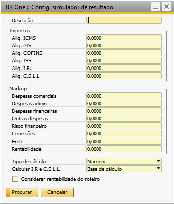{kind=link}
A tela é aberta no modo de Procurar, para adicionar deve ativar o botão Adicionar ou Ctrl+A, a tela ficará no modo de adição:
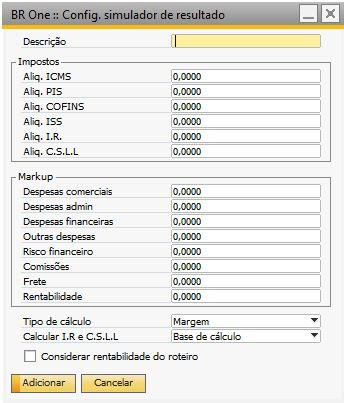{kind=link}
Devem ser configurados os valores dos Impostos, Markup e escolhido um tipo de cálculo: Margem ou Markup, que serão utilizados na tela Formação de preços de vendas.
A tela é de cadastro, ou seja, permite criar diversos padrões que poderão ser carregados na tela de formação de preço de venda.
Se for escolhido o tipo Margem, os cálculos na tela Detalhes itens (Operações > Detalhes itens) serão baseados no valor da coluna R$ Sugerido e quando o tipo for Markup, serão baseados no valor da coluna Custo total.
No tipo Margem, a soma dos campos não poderá ser igual ou ultrapassar o 100%.
Caso seja, a seguinte mensagem será exibida:
{kind=link}
BR One :: O total não pode ser maior ou igual a 100% para este tipo de cálculo (Margem). Total = 100%
O campo Descrição não poderá ser igual à descrição de um registro cadastrado.
{kind=link}
BR One :: Já existe um cadastro com a mesma descrição inserida no banco.
Se a Flag Considerar rentabilidade do roteiro estiver marcado, ao selecionar o padrão de markup na tela Formação de preço de venda, esse flag virá marcado e o campo Rentabilidade ficará bloqueado e com o valor 0.
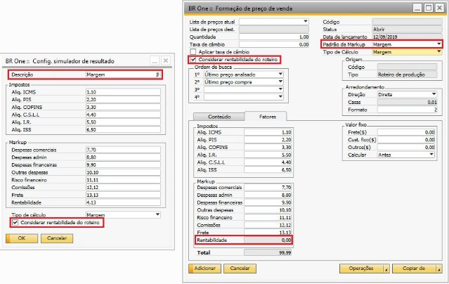{kind=link}
Flag Considerar rentabilidade do roteiro
Se estiver desmarcado e o Tipo de Cálculo for Margem (Fator divisor)
A fórmula para calcular a coluna R$ Sugerido é: Base De Cálculo / (1 – (Soma Alíquotas / 100))
Exemplo: O item FF00111BB tem custo de R$ 14,82, e o total das alíquotas é 28,05.
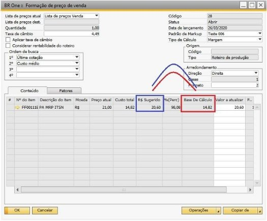{kind=link}
Ao clicar em Calcular, será feita a seguinte conta para o item:
Base de cálculo / (1 – (Soma Alíquotas / 100))
14,82 / (1 – (28,05/100)) = 20,60
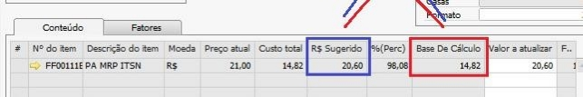{kind=link}
Se estiver desmarcado e o Tipo de Cálculo for Mark-up (Fator multiplicador)
A fórmula para calcular a coluna R$ Sugerido é: Base de cálculo + (Base de cálculo x (Soma Alíquotas / 100)).
Utilizando o exemplo acima com os mesmos itens e custo totais, ao clicar em Calcular, será feita a seguinte conta para o item:
Base de cálculo + (Base de cálculo x (Soma Alíquotas / 100))
14,82 + (14,82 x (28,05 / 100)) = 18,98
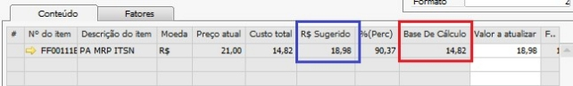{kind=link}
Se estiver marcado e o Tipo de Cálculo for Margem (Fator divisor)
Se marcado, ele passa a considerar a rentabilidade do Roteiro de produção.
A fórmula para calcular a coluna R$ Sugerido é: Base De Cálculo / (1 – (Soma Alíquotas / 100))
Exemplo: O item FF00111BB tem custo de R$ 16,74, e o total das alíquotas é 28,05.
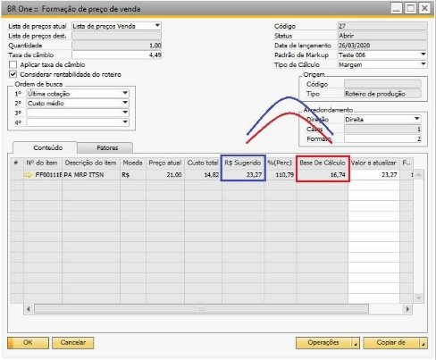{kind=link}
Ao clicar em Calcular, será feita a seguinte conta para o item:
Base de cálculo / (1 – (Soma Alíquotas / 100))
16,74 / (1 – (28,05/100)) = 23,27
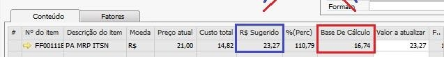{kind=link}
Se estiver marcado e o Tipo de Cálculo for Mark-up (Fator multiplicador)
A fórmula para calcular a coluna R$ Sugerido é: Base de cálculo + (Base de cálculo x (Soma Alíquotas / 100)).
Utilizando o exemplo acima com os mesmos itens e custo totais, ao clicar em Calcular, será feita a seguinte conta para o item:
Base de cálculo + (Base de cálculo x (Soma Alíquotas / 100))
16,74 + (16,74 x (28,05** / 100)) = 21,44
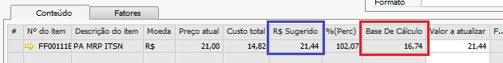{kind=link}
Campo Rentabilidade
Se o usuário marcar a opção “Considerar rentabilidade do roteiro”, o Add-on bloqueia o campo rentabilidade no quadro “Markup
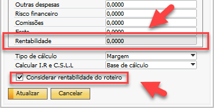{kind=link}
Calcular I.R. e C.S.L.L
No campo “Calcular I.R e C.S.L.L”, será definido o tipo de cálculo para as opções de “I.R.” e “C.S.L.L”, na tela “Formação de preço de venda”, aba “Fatores”.
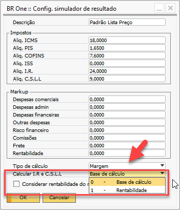{kind=link}